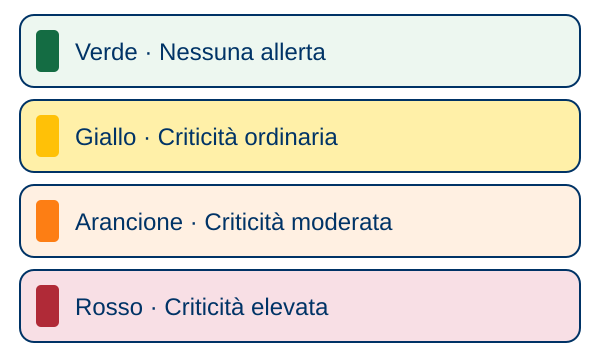

Appunti illustrati · Protezione civile · Secondaria di II grado
Come si legge l’allerta
Dove e quando vale? Per quale rischio?

La teoria
Evidenziatori: giallo = azioni; azzurro = numeri e luoghi; rosa = attenzione.
- L’allerta indica possibili effetti al suolo, non un evento certo.
- Cerca Genzano nella zona F — Bacini Costieri Sud.
- Il Centro Funzionale Regionale del Lazio emette il bollettino di criticità.
- Leggi il rischio e quando vale: il colore da solo non basta.
- Verde: nessuna allerta; giallo: criticità ordinaria; arancione: criticità moderata; rosso: criticità elevata.
Le regole
- Controlla gli aggiornamenti ufficiali.
- Segui le indicazioni delle autorità.
- Verde non significa rischio zero.
Esempio guidato
Caso documentato: allerta del 10 settembre 2026. Rientro a verde alla mezzanotte tra il 10 e l’11 settembre.
Trova la zona nel registro.
Zona F — Bacini Costieri Sud (Genzano); allerta estesa a tutte le zone del Lazio.
Leggi il livello.
Giallo: criticità ordinaria.
Individua il rischio segnalato.
Due tipi: criticità idrogeologica e criticità idrogeologica per temporali.
Controlla la validità.
Per questo bollettino: dal primo mattino del 10 settembre, per le successive 18–24 ore.
Lo schema
- Trova la zona
- Leggi il colore
- Guarda il tipo di rischio
- Controlla quando vale
Occhio all’errore
- «Con il giallo non succede niente». Sono possibili allagamenti localizzati e altri disagi.
- «Vale solo vicino ai fiumi». Riguarda l’intera zona di allerta.
Prova tu
Esempio per esercitarsi, non è un bollettino vero. Zona F; arancione; criticità idrogeologica per temporali; domani, dalle 8 alle 20.
Indica zona, livello, rischio e validità: a voce o per iscritto.
Indizio: Ripercorri i quattro passi dello schema.
Soluzione
Zona: F — Bacini Costieri Sud. Livello: arancione, criticità moderata. Rischio: idrogeologico per temporali. Validità: domani dalle 8 alle 20. Il colore da solo non dice zona, rischio e validità.
Fonti: Allerte meteo · I colori a Genzano · Registro della prevenzione · Glossario.
Manuale · 7.4, rischio meteo-idrologico · Approfondisci: Allerta a Genzano.
Testi e disegni: Gruppo Comunale Volontari di Protezione Civile di Genzano di Roma, licenza CC BY 4.0.